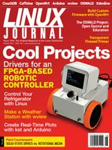

Shutdown Archive web server
Search:
Linux Journal
Issue #196/August 2010

Features
A Simple Approach to Character Drivers in User Space
by Bob Smith
Drivers for the BaseBoard4.
Using wview
by Mark Teel
How to justify buying your own weather station.
Building Custom Firmware with OpenWrt
by Mike Petullo
Add the functions you want, even a media server.
Real-Time Plots with kst and a Microcontroller
by Rob Reilly
Graphing data from an Arudino.
Indepth
The OSWALD Project
by Victor Kuechler and Carlos Jensen
Re-inventing Computer Science through open source.
Video Production 101: Making a Movie with Kdenlive
by Dave Phillips
Lights! Camera! Action!
Columns
Reuven M. Lerner's At the Forge
CouchDB Views
Dave Taylor's Work the Shell
Dealing with Signals
Mick Bauer's Paranoid Penguin
Building a Transparent Firewall with Linux, Part I
Kyle Rankin's Hack and /
Temper Temper
Dirk Elmendorf's Economy Size Geek
Cool Project Potpourri
Kyle Rankin and Bill Childers' Point/Counterpoint
Solid-State Drives vs. Rotational Media
Doc Searls' EOF
Waving Goodbye to Facebook
In Every Issue
Current_Issue.tar.gz
Letters
upFRONT
New Products
New Projects
Tech Tips
Archive Index
Shutdown Archive web server
Search:
Copyright © 1994 - 2018
Linux Journal
. All rights reserved.